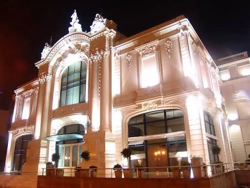
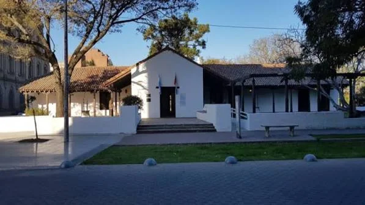
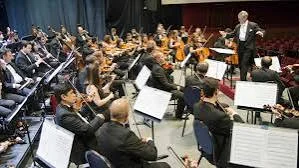

Cultura en Santa Fe
Santa Fe Capital es reconocida por su riqueza cultural: teatros históricos, museos, orquestas y festivales que reflejan la identidad santafesina desde 1573 hasta hoy.

Teatro Municipal 1º de Mayo
Inaugurado en 1905, es uno de los principales escenarios de la ciudad. Alberga conciertos, obras de teatro y festivales internacionales.
San Martín 2020, Santa Fe

Museo Histórico Provincial
Fundado en 1939, conserva documentos y objetos que narran la historia de Santa Fe desde la época colonial hasta la actualidad.
San Martín 1490, Santa Fe

Orquesta Sinfónica Provincial
Creada en 1932, es una de las más antiguas del país. Ofrece conciertos gratuitos con repertorio de Beethoven, Tchaikovsky y Verdi.
Centro Cultural Provincial, Junín 2457